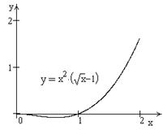

П19.1 №3
Исследуйте функцию на
возрастание (убывание) и экстремумы.
РЕШЕНИЕ:

Функция  определена
для .
определена
для .
определена
для . Производная функции обращается
в ноль при  и , при
,
и , при
,  при
, то есть в точке функция принимает минимальное значение.
при
, то есть в точке функция принимает минимальное значение.
и , при
, при
, то есть в точке функция принимает минимальное значение.